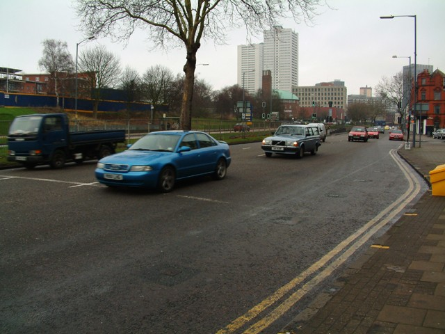
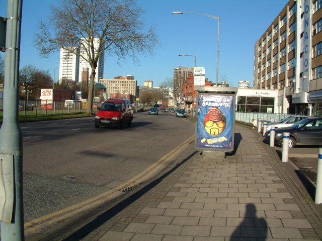
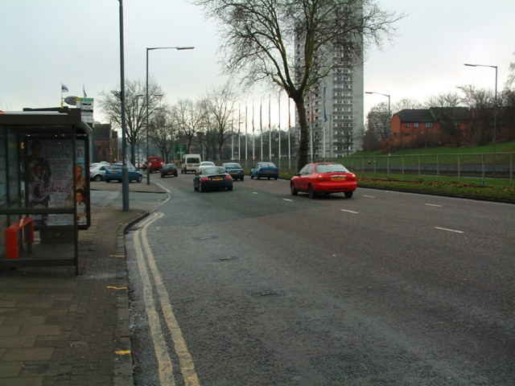
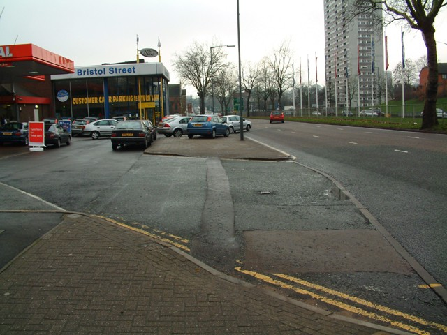
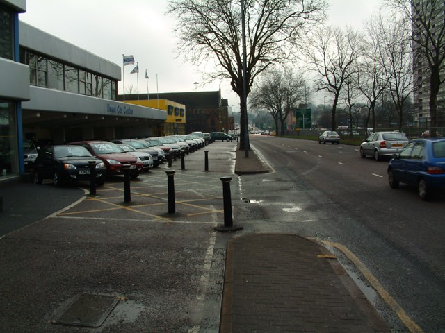
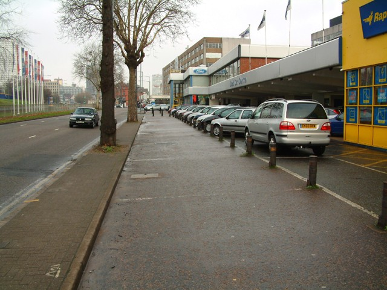
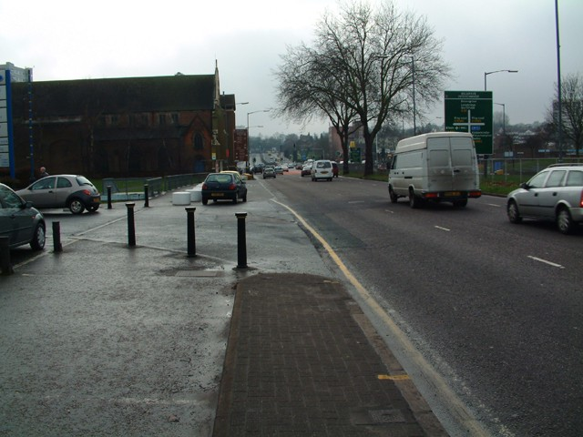
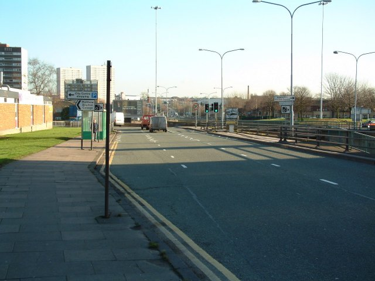

Bristol Street, Start/Finish and Pits
|| Contents || Bristol Street | Chicane | Peter Barwell Hill | Hairpin &
Belgrave Middleway |
| Sherlock Street | Pershore
Street & Bromsgrove Street || Home ||
Return to racingcircuits.net's Historic Circuits Photo Archive Main Index

The start and finish line.

The entry of the pits is directly behind me.

Approaching the entry of the pits just after the Start/Finish line.

Start of the pitlane, the garages are just a bit further up.

The pitlane, you can clearly see the garages. The working conditions are very cramped.

Looking back into the pitlane.

The exit of the pitlane.

Along Bristol Street towards the first corner.
©David Page. Reproduced here with kind permission.